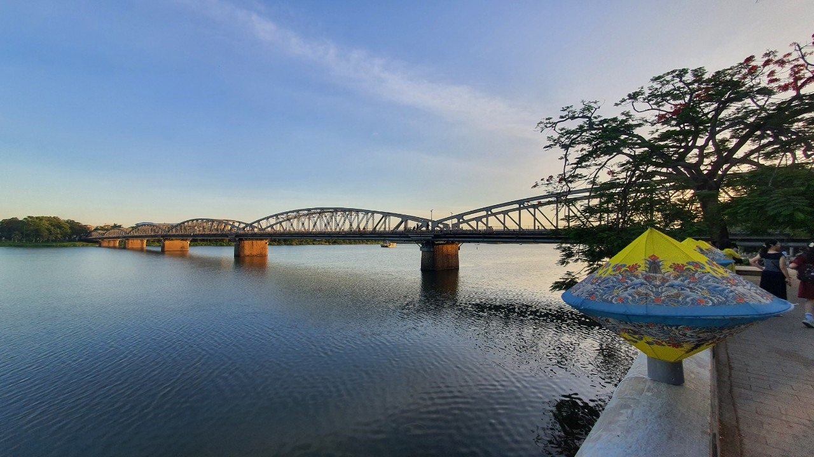
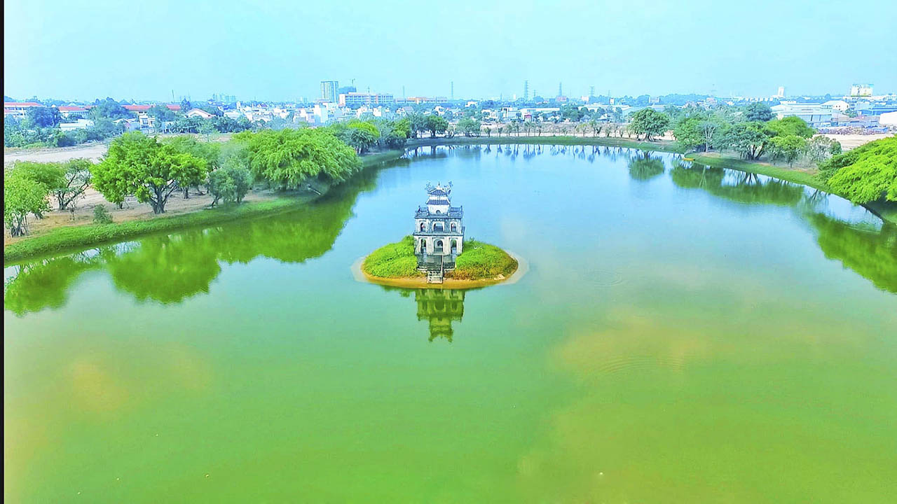

QUÊ HƯƠNG BA MIỀN
Huế
Thành phố Huế - trực thuộc tỉnh Thừa Thiên Huế, từng là kinh đô dưới thời Tây Sơn (1788-1801) và triều Nguyễn (1802 - 1945). Đây là thành phố nằm ở trung tâm của đất nước, trên trục Bắc – Nam của các tuyến đường bộ, được sắt, đường biển và đường hàng không. Huế có đường biên giới giáp với Lào, phía đông giáp biển, phía Tây Nam giáp Quảng Nam, phía Nam giáp Đà Nẵng và phía Bắc giáp tỉnh Quảng Trị. Thành phố Huế được coi là chòi đã được công nhận là di sản văn hóa phi vật thể của nhân loại.có di sản hát bài chòi đã được công nhận là di sản văn hóa phi vật thể của nhân loại.có di sản hát bài chòi đã được công nhận là di sản văn hóa phi vật thể của nhân loại. Huế hấp dẫn du khách đến nơi đây không chỉ bởi các di tích với lối kiến trúc độc đáo mà còn là khung cảnh thiên nhiên đầy thi vị và con người hiền hòa, chân chất. Huế còn được biết đến với tên gọi thành phố Festival. Festival Huế được tổ chức lần đầu tiên vào năm 2000 và cứ 2 năm thì thành phố Huế tổ chức Festival một lần.
Sài Gòn
Thành phố Hồ Chí Minh hoặc Sài Gòn, nằm ở phía nam của Việt Nam, vẫn được gọi là Sài Gòn bởi hầu hết người dân địa phương. Thành phố hiện đại này được người Pháp coi là "Hòn ngọc Phương Đông". Sông Sài Gòn rộng lớn, có một biến lớn từ phía đông Sài Gòn, nối liền thành phố với biển. Khác với Hà Nội, thủ đô của Việt Nam, Sài Gòn - Thành phố Hồ Chí Minh có thể thiếu nét duyên dáng và sang trọng, nhưng thành phố, với đặc tính thiết yếu của Pháp, đã đủ để thu hút sự chú ý của bạn. Các biệt thự thuộc địa của thành phố, con đường rộng và một xã hội quán cà phê sống động nhắc nhở bạn về những ngày thống trị của Pháp. Trong 10 năm qua, Sài Gòn - Thành phố Hồ Chí Minh đã trải qua một sự thay đổi ngoạn mục trong cảnh quan thành phố. Cảnh quan thấp một lần của khu vực trung tâm của thành phố, Quận 1, hiện được đánh dấu bằng các tòa nhà chọc trời sáng bao gồm các căn hộ cao tầng, khách sạn quốc tế và các tòa nhà văn phòng. Trung tâm công nghiệp nhộn nhịp, sôi động của quốc gia này cũng là thành phố lớn nhất của Việt Nam.

Hà Nội
Hà Nội đã sớm trở thành một trung tâm chính trị, kinh tế và văn hóa ngay từ những buổi đầu của lịch sử Việt Nam., Hà Nội là nơi tập trung nhiều địa điểm văn hóa giải trí, công trình thể thao quan trọng của đất nước, đồng thời cũng là địa điểm được lựa chọn để tổ chức nhiều sự kiện chính trị và thể thao quốc tế. Đây là nơi tập trung nhiều làng nghề truyền thống, đồng thời cũng là một trong ba vùng tập trung nhiều hội lễ của miền Bắc Việt Nam. Thành phố có chỉ số phát triển con người ở mức cao, dẫn đầu trong số các đơn vị hành chính của Việt Nam. Nền ẩm thực Hà Nội với nhiều nét riêng biệt cũng là một trong những yếu tố thu hút khách du lịch tới thành phố. Năm 2019, Hà Nội là đơn vị hành chính Việt Nam xếp thứ 2 về tổng sản phẩm trên địa bàn (GRDP), xếp thứ 8 về GRDP bình quân đầu người và đứng thứ 41 về tốc độ tăng trưởng GRDP. Thành phố được UNESCO trao tặng danh hiệu "Thành phố vì hòa bình" vào ngày 16 tháng 7 năm 1999. Khu Hoàng thành Thăng Long cũng được tổ chức UNESCO công nhận là di sản văn hóa thế giới
